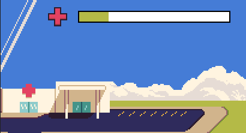
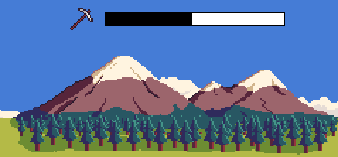
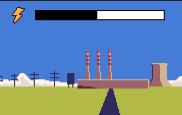
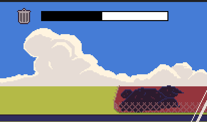
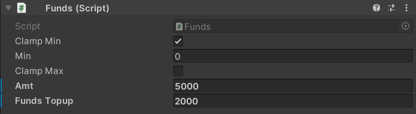
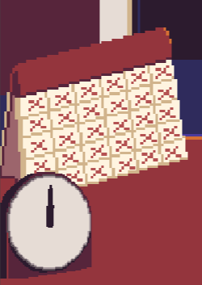
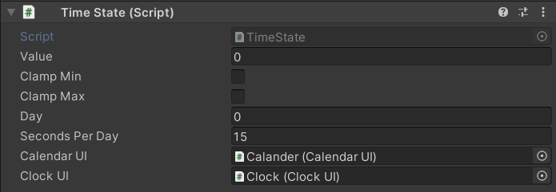

Current Game State Properties
Below are the GameStateProperties that are currently in the game.
Health/Infection Rate

The InfectionRate GameStateProperty measures the health of the in-game nation. If it is too high, it means the infection rate is too high, and health care services cannot keep up with the high infection rate.
Calculation of effect
When a proposal is passed into the InfectionRate GameStateProperty, it tries to find a product property named "PFE" (Particle Filtration Efficiency) for each product in order to calculate its effects. If absent, it the protection from using the product will be assumed to be 0.
Effect on Population = PFE * Size of User Group
Overall Effect = Effect of ProductA - Effect of ProductB (Accepted Proposal) OR
Overall Effect = Effect of ProductB - Effect of ProductA (Rejected Proposal)
Applied Effect = Sign(Overall Effect) * Log(|Overall Effect|)
Resource Consumption

The ResourceConsumption GameStateProperty measures the rate of resource consumption of the in-game nation. If it is too high, it means the extraction of resources from the environment is too fast.
Calculation of effect
When a proposal is passed into the ResourceConsumption GameStateProperty, it uses each product's resource usage to calculate the total weight of resources used for each product. Because weight is measured in grams in the game, a scale of 0.01 is used so that changes to the GameStateProperty will not be overly sensitive.
Effect of Product = Product's Resource Usage * Quantity of Product
Overall Effect = Effect of ProductA - Effect of ProductB (Accepted Proposal) OR
Overall Effect = Effect of ProductB - Effect of ProductA (Rejected Proposal)
Scaled Effect = Overall Effect * 0.01
Applied Effect = Sign(Scaled Effect) * Log(|Scaled Effect|)
Energy Consumption

The EnergyConsumption GameStateProperty measures the rate of energy consumption of the in-game nation.
Calculation of effect
When a proposal is passed into the EnergyConsumption GameStateProperty, it uses each product's Makeup to calculate the total energy used in the production of each product. Because weight is measured in Joules in the game, a scale of 0.001 is used so that changes to the GameStateProperty will not be overly sensitive.
Effect of Product = Product's total Production Energy * Quantity of Product
Overall Effect = Effect of ProductA - Effect of ProductB (Accepted Proposal) OR
Overall Effect = Effect of ProductB - Effect of ProductA (Rejected Proposal)
Scaled Effect = Overall Effect * 0.001
Applied Effect = Sign(Scaled Effect) * Log(|Scaled Effect|)
Waste Generated

The WasteGenerated GameStateProperty measures the rate of waste generation of the in-game nation.
Calculation of effect
When a proposal is passed into the WasteGenerated GameStateProperty, it uses each product's resource usage to calculate the total weight of resources used for each product. Because weight is measured in grams in the game, a scale of 0.01 is used so that changes to the GameStateProperty will not be overly sensitive.
Effect of Product = Product's Resource Usage * Quantity of Product
Overall Effect = Effect of ProductA - Effect of ProductB (Accepted Proposal) OR
Overall Effect = Effect of ProductB - Effect of ProductA (Rejected Proposal)
Scaled Effect = Overall Effect * 0.01
Applied Effect = Sign(Scaled Effect) * Log(|Scaled Effect|)
Note
Currently The WasteGenerated and ResourceUsage GameStateProperties are indistinguishable, which is a limitation of the game.
Funds
The Funds GameStateProperty measures the funds available to the player.
Calculation of effect
When a proposal is passed into the Funds GameStateProperty, it tries to find a product property named "Cost" for each product in order to calculate the cost of the procuring product. If absent, it the cost of procuring using the product will be assumed to be 0.
Total Cost of Product = Product's Cost * Quantity of Product
Applied Effect = Total Cost of ProductA - Total Cost of ProductB (Accepted Proposal) OR
Applied Effect = 0 (Rejected Proposal)
Note
The cost of the proposed product (ProductA) can be cheaper or more expensive than the existing product (ProductB), and accepting a proposal can increase or decrease funds respectively. If a proposal is rejected, then no change happens and funds remains the same.
Configurable Options

Clamp Min- Whether to set a minimum value for the GameStatePropertyMin- the minimum value to clamp the GameStateProperty toClamp Max- Whether to set a maximum value for the GameStatePropertyMax- the maximum value to clamp the GameStateProperty toAmt- the starting amount of funds available to the playerFunds Topup- the amount of funds to add at the end of each level
Time

The TimeState GameStateProperty measures the time remaining in the level. It is not affected by Proposals in any manner.
The in-game time is measured in days, and whenever a day has passed, it fires an event that can be used by other scripts to trigger code. For example, the NewsManager uses it to know when to show the news to the player.
Configurable Options

Value- the current time in the level, measured in real-life secondsClamp Min/Clamp Max- inherited from the base GameStateProperty class. Should not be used unless there is good reason for clamping the time.Day- the current in-game day in the levelSeconds Per Day- the number of real-life seconds that make up an in-game dayCalendar UI- the UI object that shows the in-game daysClock UI- the UI object that shows the in-game clock